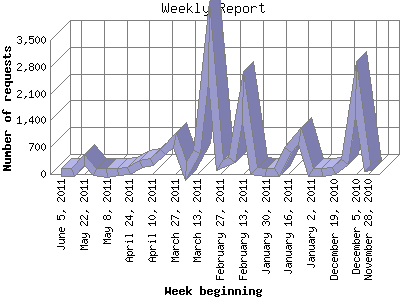

The Weekly Report identifies the activity for each week within the report
time frame. Remember that one page hit can result in several server requests
as the images for each page are loaded.
Note: Depending on the
report time frame for this report the first and last week may not represent
a full seven day week, resulting in lower hits.

| Week beginning | Number of requests | Number of page requests | |
|---|---|---|---|
| 1. | November 28, 2010 | 71 | 26 |
| 2. | December 5, 2010 | 2,230 | 72 |
| 3. | December 12, 2010 | 326 | 37 |
| 4. | December 19, 2010 | 84 | 31 |
| 5. | December 26, 2010 | 40 | 16 |
| 6. | January 2, 2011 | 55 | 26 |
| 7. | January 9, 2011 | 1,000 | 56 |
| 8. | January 16, 2011 | 633 | 58 |
| 9. | January 23, 2011 | 61 | 44 |
| 10. | January 30, 2011 | 47 | 26 |
| 11. | February 6, 2011 | 76 | 44 |
| 12. | February 13, 2011 | 2,006 | 42 |
| 13. | February 20, 2011 | 360 | 38 |
| 14. | February 27, 2011 | 223 | 43 |
| 15. | March 6, 2011 | 3,444 | 66 |
| 16. | March 13, 2011 | 583 | 53 |
| 17. | March 20, 2011 | 86 | 47 |
| 18. | March 27, 2011 | 898 | 34 |
| 19. | April 3, 2011 | 580 | 67 |
| 20. | April 10, 2011 | 317 | 58 |
| 21. | April 17, 2011 | 262 | 42 |
| 22. | April 24, 2011 | 80 | 28 |
| 23. | May 1, 2011 | 56 | 29 |
| 24. | May 8, 2011 | 37 | 22 |
| 25. | May 15, 2011 | 49 | 26 |
| 26. | May 22, 2011 | 376 | 23 |
| 27. | May 29, 2011 | 44 | 19 |
| 28. | June 5, 2011 | 63 | 26 |
Most active week beginning December 5, 2010 : 72 pages sent. 3,444 requests handled.
Weekly average: 39 pages sent. 503 requests handled.
This report was generated on June 9, 2011 10:19.
Report time frame November 29, 2010 18:26 to June 8, 2011 16:52.
| Web statistics report produced by: analog 6.0 / Report Magic 2.21 |